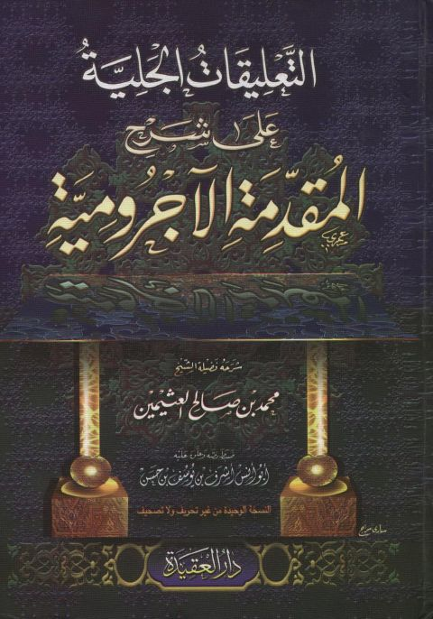

Downloads need an internet connection.
التعليقات الجلية على شرح المقدمة الآجرومية
Authors: محمد بن صالح العثيمين
Editors: أبو أنس أشرف بن يونس بن حسن
Publishers: دار العقيدة للتراث
**▫️ العنوان: التعليقات الجلية على شرح المقدمة الآجرومية** ▪️ المؤلف: #محمد_بن_صالح_العثيمين ▫️ المحقق: #أبو_أنس_أشرف_بن_يونس_بن_حسن ▪️ الناشر: #دار_العقيدة ▫️ بلد النشر: القاهرة، #مصر ▪️ الطبعة: 1 ▫️ عدد الأجزاء: 1 ▪️ الصفحات: 730 ▫️ نوع الوعاء: #كتاب ▪️ التصنيف الرئيسي: #اللغة_العربية ▫️ التصنيف الفرعي: #نحو_إعراب ۪